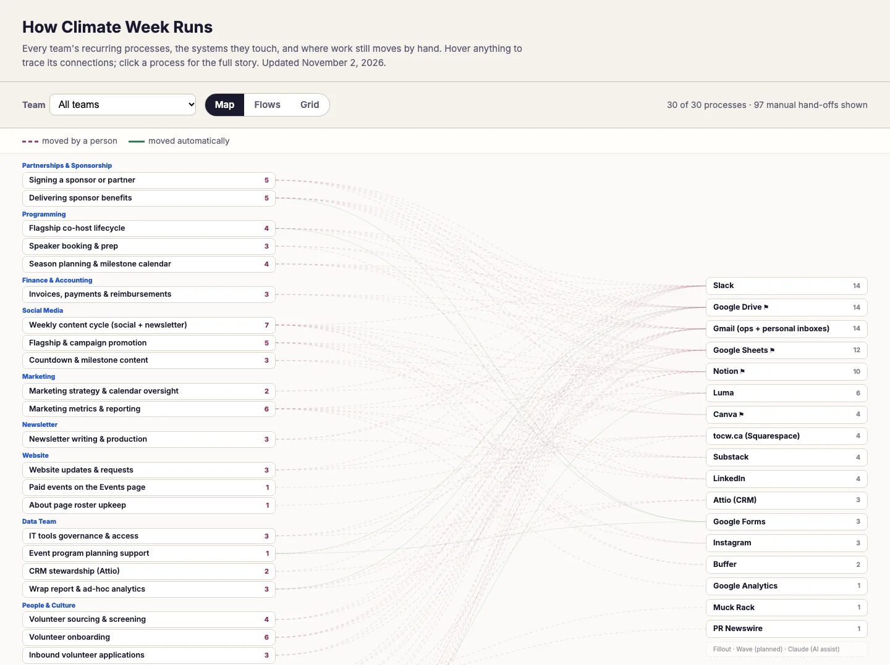
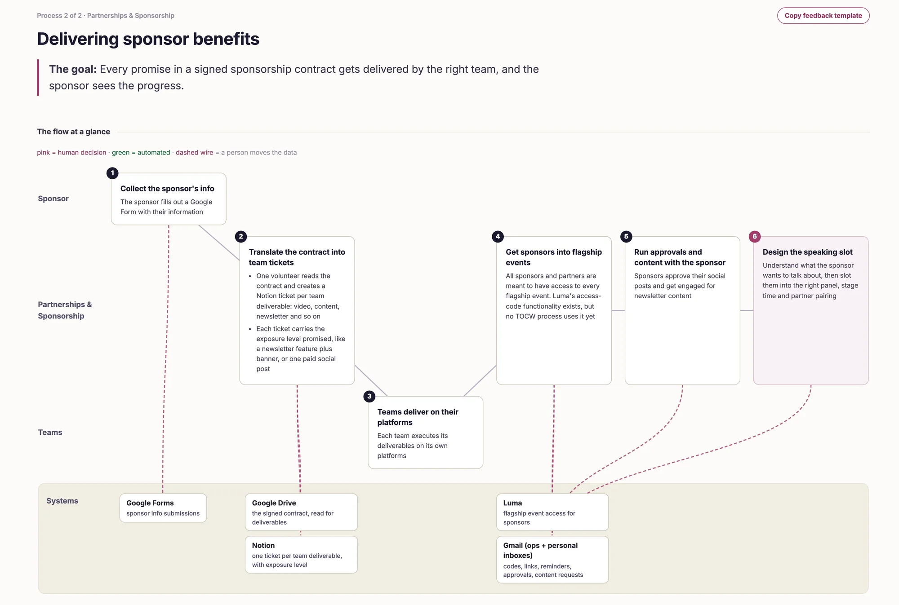
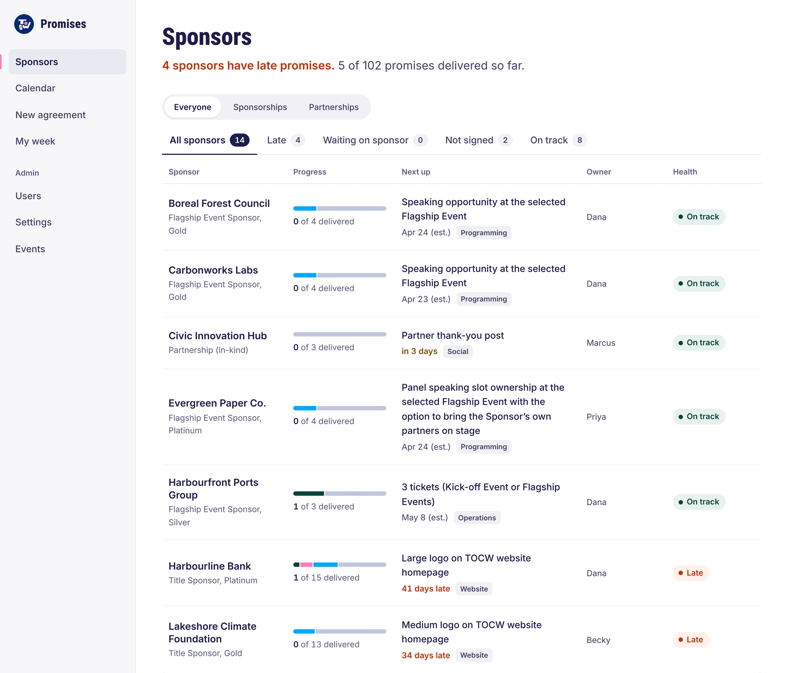
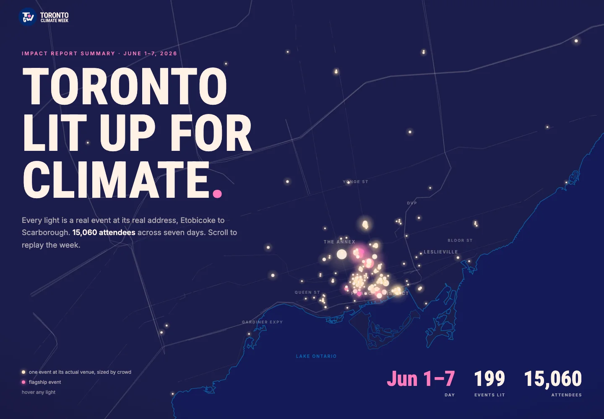

Full operational visibility and custom-built toolsfor a decentralized, asynchronous organization.
Toronto Climate Week is a volunteer-run organization of about 70 volunteers. I standardized how the volunteers work and automated the workflows between them. Its sponsors get a better experience, and the team gets its weeks back.
Weeks to daysFrom sponsor proposal to every team briefed
10 to 1Spreadsheets reconciled into one CRM
2 months to 5 daysFor the annual impact report
30 processesDocumented, with the workflows between teams automated
01The challenge
An organization run by 70 volunteers, looking to standardize, automate and scale its operations.
Toronto Climate Week brings about 200 climate events and 15,000 attendees together across the city every year, funded by around 30 sponsors and partners. Volunteers work across seven departments, and so much of the team's time was going towards manual, non-value-added tasks and coordination.
The team knew their process wasn't smooth, but had never had the chance to fully map it out. Sponsor data lived in about ten spreadsheets that did not agree, each signed contract was turned into tickets by hand, and the annual impact report took two months. They had a list of problems to fix and goals for the year, with no clear understanding of where and how AI would fit in.
02Their AI journey
The way the team works, standardized and automated.
1An AI plan tied to the year's goals
I met each team lead one on one, then ran a one-day session with leadership that opened with what AI does well and where it fails. They left with an understanding of where and how AI fits into their goals, what a potential solution could look like, and alignment on priorities and timeline.
2The whole operation on one page
I asked every team how their work moves and pulled the existing documents out of Notion and Google Drive. That became one map of 30 processes, each with a written procedure, most of them written down for the first time. Having that clear before picture let us work out as a team what the after picture should look like.

The process map. Every team's recurring processes on one page, with the systems each one touches.

One process in detail. “Delivering sponsor benefits” as mapped, before anything was built. Dashed lines mark data moved by hand.
3One source of truth every team works from
Sponsor and partner data lived in about ten spreadsheets, Notion pages and a CRM nobody used, and none of them agreed. The team leads had stopped using the CRM because it took effort and showed them nothing they needed.
I reconciled every source into one CRM, with someone on the team checking each merge, and rebuilt it around how each team works. Each team got a dashboard laid out like the sheet it replaced, showing only what it needs, and data entry was made as easy as it could be through automated connectors.
Whoever picks up a relationship can now see what was promised without asking anyone, and everything built afterwards runs on data the team trusts.
4Custom tools that match exactly how the team works
Building on the process map and the single source of consolidated data, I built a custom tool to automate and streamline how the team delivers and tracks its core deliverables, within and across teams.
From generating the initial contract and sending it for signature to sending and tracking invoices and automatically creating tickets for each team, all the work now sits in a single view, so the team can coordinate much more easily and nothing gets dropped.
A Slack connector was built on top, so team members can give updates and see their deliverables without ever leaving their workspace.

The sponsor tracker. The data shown is sample data.
5Reporting that took months, done in days
The previous year, the annual impact report had taken two months. To replace this heavily manual and data-intensive work, I built a tool that reviewed all the data Climate Week had and identified the interesting narratives and the data the team wanted to pull out and show.
The full report was delivered in five days as the deck the team asked for, plus an interactive website built around the stories and narratives that highlighted Toronto Climate Week. See it live at 2026.tocw.ca.

The impact report website. Every light is a real event at its address.
6Training and hand-over, so the tools get used
Building and handing over the tools was just the first step. The tools and new processes were first delivered with clear written instructions and accompanying videos.
I then continued working with the team to answer questions, take in feedback to further iterate on the tools, and hold one-on-one sessions with team members as needed, to make sure the tools were easily adopted and fit what the team needed to deliver the outcome we were looking for.
03What changed
Countless processes spread across 70 volunteers, simplified and automated.
That helps the organization scale, and frees the team to work on the tasks that truly add value.
Weeks to days from sponsor proposal to every team briefed
The contract, the invoice and each team's tasks are created when a deal is signed, so what a sponsor was promised no longer depends on someone reading a contract correctly.
10 to 1 spreadsheets reconciled into one CRM
Every team works from the same numbers, and whoever picks up a relationship can see what was promised without asking anyone.
2 months to 5 days for the annual impact report
Sponsors received it while the event was still fresh, and next year's report starts from the same data.
30 processes documented and consistent, with the workflows between teams automated
They replace the one-off manual tasks, and the knowledge now stays with the organization when a volunteer or staff member leaves.
In their words
“Weekback Partners never assumed what the solutions should be. They came with a complete open mind, and first mapped out how we worked and why, then what our strategic goals were as an organization, and only then created solutions. They built for our strategy, budget and capabilities.”
Executive Director, Toronto Climate Week
Want to see where this would start in your organization?
Pick a time, tell me what's slowing things down, and we can talk about what a partnership could look like.
 Case study · Toronto Climate Week
Case study · Toronto Climate Week